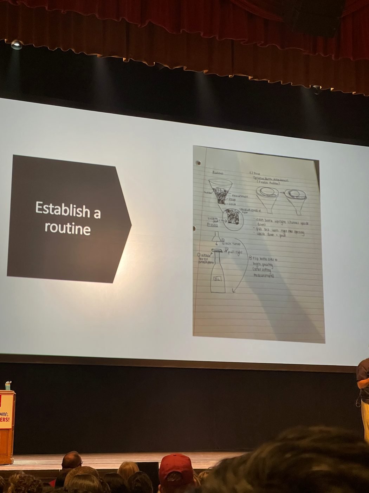

IU Luddy · Class of 2027 · giving back
here's what you need to know as an informatics major class of 2027 at indiana university
For high school seniors and early starters. I took AP Computer Science Principles as a freshman. It is never too early to start. I love IU, and this is me passing notes forward.

Never too early · AP & AP CSP
I sat AP CSP as a high school freshman. If you are curious about code and systems now, start now. You do not need to wait until senior year of high school.
Official AP exam credit at IU Bloomington (always verify current table): admissions.indiana.edu · AP exam credit.
- Computer Science Principles (AP CSP / “Computer Science P”) · score 3, 4, or 5 →
CSCI-C 102(3 cr) - Computer Science A · score 3 →
CSCI-C 102(3 cr); score 4 or 5 →CSCI-C 200(4 cr)
Send official scores from the testing agency to IU Admissions. Your counselor can help map credit to your intended major. Credit tables can change, so read the live page.
Orientation
Show up prepared. Know where advising lives. Bring questions about first-semester load, AP credit, and how Informatics sequences with GenEd.
Bloomington orientation hub: one.iu.edu · Orientation Bloomington.

Mental health resources
College is a lot. IU publishes official student mental health resources. Use them. I am linking out only. I am not giving clinical advice.
Informatics courses · Class of 2027 notes
Humble take from someone still in it. This is not a grade guarantee and not a copy of the Reddit thread. That post (thanks again, Let's break down the classes in Informatics) showed me what “giving back” looks like for Luddy students.
- Core path · Expect a ladder through intro, math foundations, social informatics, infrastructure (Python), HCI, and information representation. Prerequisites matter. Ask advising before you skip around.
- Office hours · Go early on group project courses. Do not be the teammate who disappears.
- Design vs. code · Some courses feel creative and project-heavy. Some feel like systems and databases. Both count. Follow what you can sustain.
- Cognate / minor · Informatics pairs tech with another field. Pick something you will actually use. Business, media, security tracks, and more exist. Confirm current options in the bulletin.
- Capstone & topics · Save bandwidth for later. Topic courses and capstone vary a lot by semester.
For official requirements, use the Luddy bulletin and your advisor, not a blog post (including this one). Community threads age. Policies update.

Campus survival · freshman welcome
Student-life notes I kept for Bloomington: visitors, dorms, packing, coffee, outfits, and welcome week. Sourced from my LINKS Google Doc. Attribute the destinations below (IDS Issuu, shared Docs, Pinterest board).
Please follow me on Instagram: @jadexzhao. The Doc also says "AMOS @ jadexzhao." That reads as the same handle (no second Instagram URL in the Doc). If AMOS is a separate account, send the handle and I will add it.
- VISITORS GUIDE · IDS News Source Living (Issuu)
- DORM GUIDE · IDS News Housing Living (Issuu)
- IU Bucket List
- TIPS FOR COLLEGE
- Indiana University Dorm Tips
- FRESHMAN WELCOME WEEK @ IU
- College Packing List · open, make a copy, check off
- IU Bloomington Calendar 2023 - 2024 · student notes from that year. Stale for current terms. Verify dates on the official IU Bloomington academic calendar (Registrar).
- Outfit Ideas for College
- College Advice and Tips QNA
- Coffee Shops In Bloom
- PINTEREST · IURPS saved board



How to get involved
- Talk to Luddy advising early about first-year load and AP placement.
- Join a student org or peer mentoring space once you land. Showing up beats lurking forever.
- Build something small you can explain in plain language. Portfolio > vibes.
- When you have notes that helped you, pass them on. That is the whole point of this page.